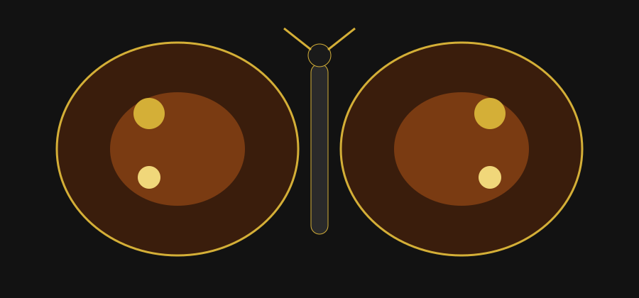

Butterflies and Mathematical Symmetry 🦋

Welcome!
Have you ever looked closely at a butterfly and noticed how similar the two sides of its wings are? This made me curious about the mathematics behind its beautiful and balanced shape. In this project, I will explore reflection symmetry in butterfly wings and how a simple mathematical idea can be seen in nature. I will also create my own design inspired by this idea and show how mathematics can be used to create patterns and shapes.
My Mathematical Question
How does reflection symmetry create the similar shapes and patterns on the two sides of a butterfly?
My Initial Idea
I think the two sides of the butterfly show reflection symmetry. The line through the middle of the butterfly's body acts as an axis of symmetry. If one side is reflected across this line, it creates a similar shape on the other side. I want to explore how this reflection works mathematically and why the butterfly looks so balanced.